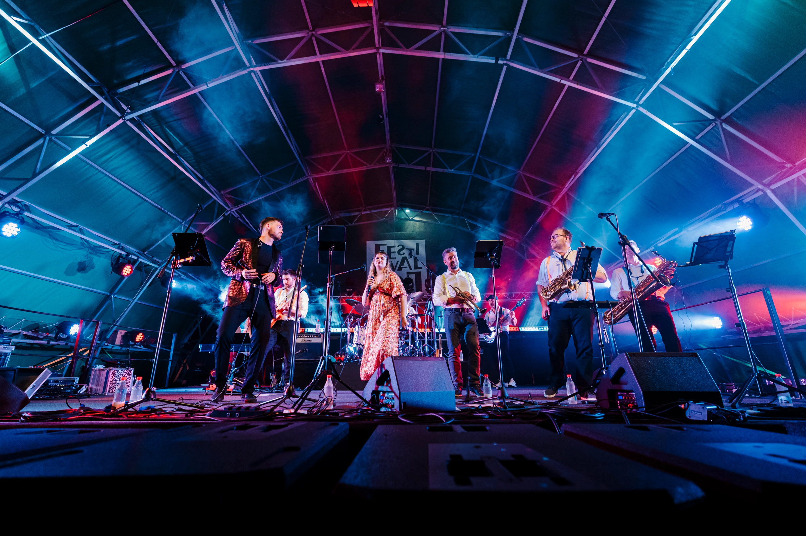
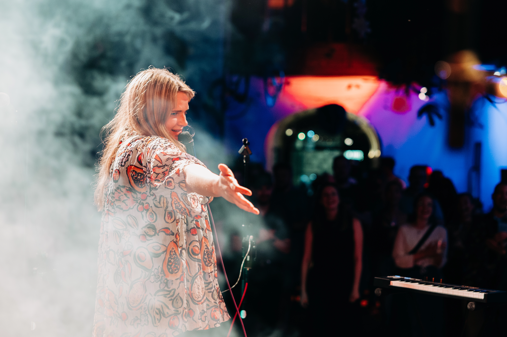

SOUL · FUNK · DISCO · POP · ROCK’N’ROLL
Groovocado
9 glasbenikov. Ena velika doza groova.
Povabi nas na oder
GROOVOCADO / LIVE & LOUD01 /
Sveža doza groova.
Groovocado je eden najbolj zdravih muzikadežev na Zemlji.
V večjih količinah vsebuje življenjsko esencialna hranila, kot so soul, funk, disco, pop, rokenrol ter bisere 80-ih in 90-ih. Poleg tega vsebuje tudi lepe brade, negovane lase in lastnega Jezusa.
Blagodejno učinkuje proti stresu, dolgčasu, nelagodju in po zadnjih študijah tudi stanju, imenovanem safr. 9 živahnih glasbenikov bo razmigalo vašo ritko!
02 /
Poglej. Poslušaj. Začuti.
Groovocado / 02
Odpri na YouTubu
03 /
Za medije & organizatorje.


04 /
Se vidimo na odru?
Pripravimo lahko krajše ali daljše nastope. Za več informacij nas pokliči ali nam piši.
groovocado@gmail.com